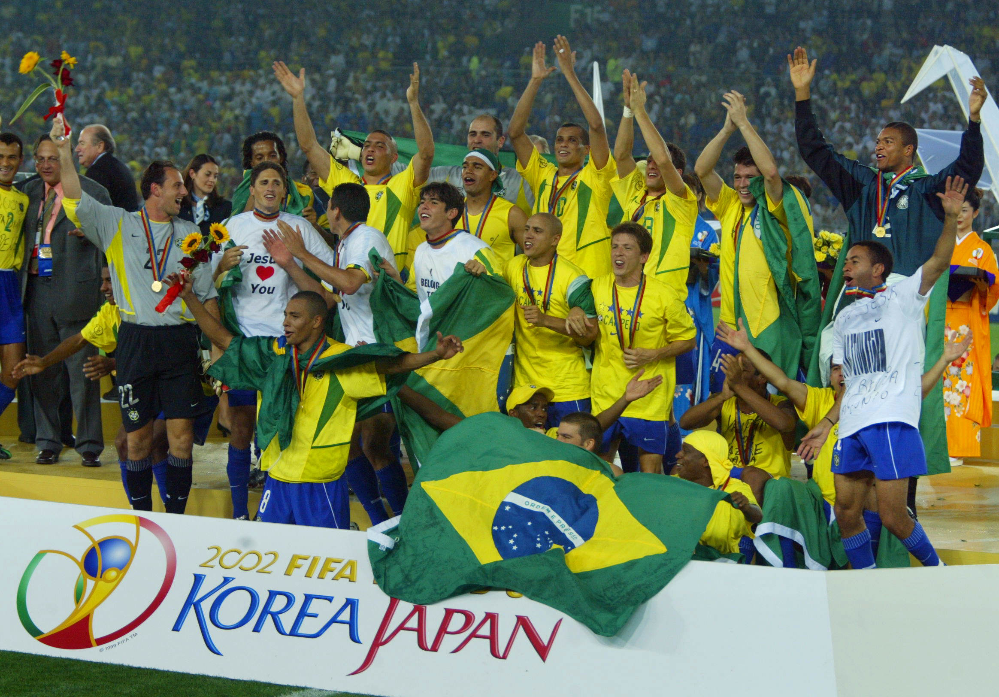

América
Uruguay


¿Sabías qué?....
1930-1950 🥳 En 1950 no hubo final solo hubo 2 fases de grupos. “El Maracanazo”en realidad fue en la segunda fase de grupo
ir arribaBrasil


¿Sabías qué?....
1958-1962-1970-1994-2002 Brasil es el máximo campeón de las copas del mundo, también es la única selección en haber jugado todas las copas mundial
ir arribaArgentina


¿Sabías qué?....
1978-1986-2022 Argentina es el segundo país que jugó más mundiales, en el 1978 lo ganamos bajo una dictadura, en el 1986 los jugadores se fueron al norte para entrenar para méxico
ir arribaEuropa
Italia


¿Sabías qué?....
1934-1938-1982-2006 🥳 Italia fue el segundo campeón del mundo tambien el primer bi campeón, lo unico que dos de sus 4 mundiales fueron comprados por el dictador Benito Mussolini
ir arribaAlemania


¿Sabías qué?....
1954-1974-1990-2014 Alemania es el segundo máximo campeón empatado con Italia pero Alemania es el máximo perdedor de los mundiales, (osea que perdió más finales)
ir arribaEspaña

¿Sabías qué?....
2010 España es la última selección en haber ganado su primer mundial, España, Argentina y Alemania, todos estos tienen en común que les ganaron la final a Países Bajos
ir arribaFrancia


¿Sabías qué?....
1998-2018 Francia es el país que ganaron una final del mundo con más diferencia de goles por 3 goles le ganaron a Brasil, francia inició la maldición del campeón pero casi la rompe en 2022
ir arribaInglaterra

¿Sabías qué?....
1966 Inglaterra es de los pocos paises que solo ganaron un mundial, se dice que después de que inglaterra ganó esa final robandola se lanzó una maldición desde entonces no ganan ningún torneo internacional
ir arriba